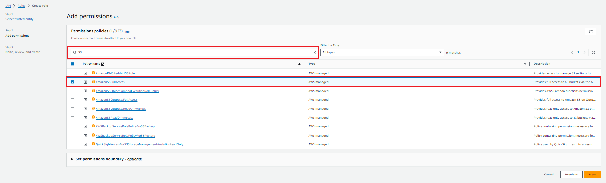
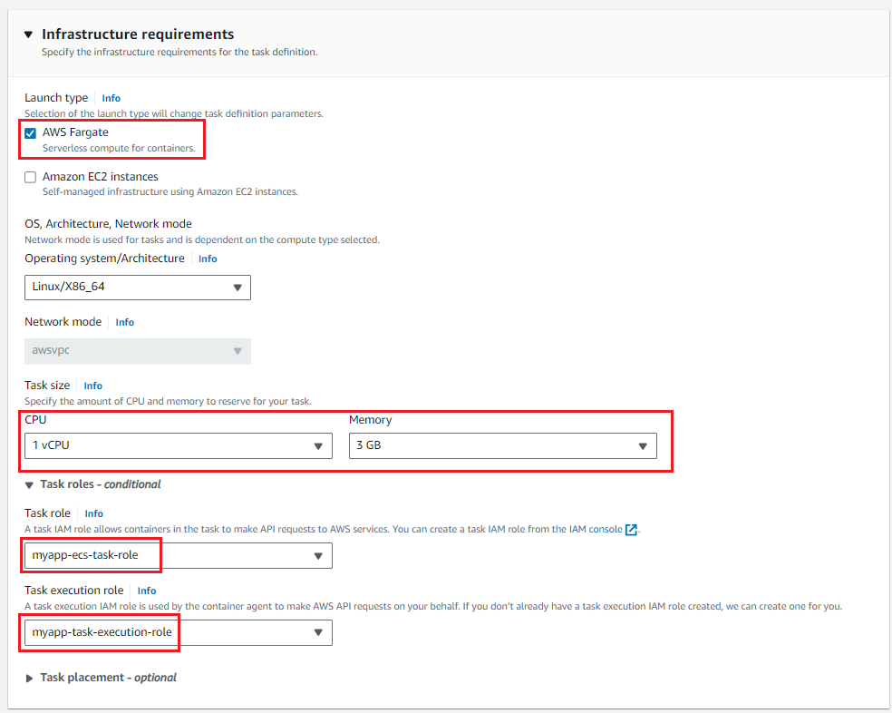

IPv4 CIDR block can be set to 10.0.0.0/22. It will provide more than 1000 IP addresses which is more than enough for this lab.
No IPv6 CIDR is needed.
Choose 3 Availability Zones and leave other options as default.
Creator should create:
It provides access to the Internet.
It contains route entry to the Internet gateway which makes all of the three subnets public.

It contains prefix list with multiple IP addresses assigned to the S3 VPC Endpoint.

There should be a S3 VPC Endpoint providing internal access to S3 service from private subnets.
We want to create EC2 instance in our default VPC to have a quick connection to it. Default VPC is always created automatically by AWS in our account and contains all stuff required to connect with the EC2 instance.
For this excercise we do not have to create EC2 in our previously created VPC.
AWS will automatically create a small storage.
AWS will create additional resources on its own, such us security group, etc.
It might take some time (~2 minutes).
Fill name and select "Standard" for the type.
Leave other values as default.
Specify only unique name. This must be unique globally (not only in your account)!
Leave all other settings as default.
#!/bin/bash
while true; do
# Get used memory
used_memory=$(free -m | awk 'NR==2{print $3}')
# Create JSON request body
current_timestamp=$(date +%s)
echo "Current EC2 used memory: $used_memory | Timestamp: $current_timestamp" > message.txt
# Publish message to SNS using AWS CLI
aws sns publish --topic-arn $SNS_TOPIC_ARN --message file://message.txt
# Wait for 120 seconds before the next iteration
sleep 120
done

Set name and review created role:

Click on the "Create role".


aws s3api get-object --bucket scripts-cywinski-bucket --key ec2_script.sh ec2_script.sh
chmod 777 ec2_script.sh
export SNS_TOPIC_ARN=arn:aws:sns:eu-central-1:467331071075:notification-sns
./ec2_script.sh

Table name should be set to "Measurement", as this is the table that our application will try to connect with.
Partition key must be set to "deviceId" (String) and sort key must be set to "creationTime" (Number).

Thanks to this setting, we will be able to access updated entry in our notification Lambda function later on.
Function will be written in Python and we want to author it from scratch.
This will allow our Lambda to send notifications to our topic.

We should be able to create the trigger, as we have extended the existing Lambda role with DynamoDB policy.
import json
import boto3
import logging
import os
# Configure logging
logger = logging.getLogger()
logger.setLevel(logging.INFO)
# Get SNS topic ARN from env variable
sns_topic_arn = os.getenv('SNS_TOPIC_ARN')
# Create SNS client
sns_client = boto3.client('sns')
def lambda_handler(event, context):
for record in event['Records']:
if record['eventName'] == 'INSERT': # React only on PutItem events
# Extract the item data from the event
item_data = record['dynamodb']['NewImage']
# Convert the data to JSON
json_data = json.dumps(item_data)
# Publish the item data to SNS topic
response = sns_client.publish(
TopicArn=sns_topic_arn,
Message=json_data
)
# Log the published item and response
logger.info("Published item to SNS topic: %s", response)
This variable will be used in execution to point to our SNS topic and send notification.


Make sure that you have selected our custom VPC instead of the default one.

Make sure to select our custom VPC instead of the default one.
/actuator/health is the endpoint exposed by our application that provides health status.
Leave other attributes untouched and click on "Next"
In the next overview do not specify any IP targets, just click on "Create target group"

ECS Fargate will register IP addresses of its tasks to the target group on its own, we do not need to specify it manually.

We will be creating "Internet-facing" load balancer.
Make sure to select our custom VPC instead of the default one.
Select all three AZs:
Select only public subnets in each AZ.

Make sure that selected protocol is "HTTP" and port is 80.


Wait until the creation has finished.

With this configuration, ECS Task will be able to assume the role that we are now creating.

We will specify inline policy and attach it to the role later.
First, we are creating ECS Task Role.
The only difference (for now) will be the role name.


{
"Version": "2012-10-17",
"Statement": [
{
"Action": [
"logs:*",
"CloudWatch:*",
"kinesis:*"
],
"Effect": "Allow",
"Resource": "*"
},
{
"Action": "dynamodb:*",
"Effect": "Allow",
"Resource": "*"
},
{
"Effect": "Allow",
"Action": "ssm:GetParametersByPath",
"Resource": [
"arn:aws:ssm:eu-central-1:*:parameter/config/application*",
"arn:aws:ssm:eu-central-1:*:parameter/config/backend*"
]
}
]
}


{
"Version": "2012-10-17",
"Statement": [
{
"Action": [
"logs:*",
"ecr:GetDownloadUrlForLayer",
"ecr:BatchGetImage",
"ecr:GetAuthorizationToken",
"CloudWatch:*",
"ecr:BatchCheckLayerAvailability"
],
"Effect": "Allow",
"Resource": "*"
},
{
"Action": "secretsmanager:GetSecretValue",
"Effect": "Allow",
"Resource": "*"
},
{
"Action": "kms:Decrypt",
"Effect": "Allow",
"Resource": "*"
}
]
}
Make sure to select our custom VPC instead of default one.
Select previously created Load Balancer Security Group as "Source".



It is important to add :latest to the copied ECR URI, so that the most recent version of our application will be used when deploying new tasks.

Leave other attributes as default and click on "Create"
Go to "Clusters" (in left menu), select previously created Fargate cluster and under "Services" click on "Create"

Initially, set "Desired tasks" to 0, as we do not want to start our service yet, as there is still no application image available in ECR and, therefore, we would receive errors.

Make sure to select our custom VPC instead of default VPC.
Select only public subnets. We do not want to select private subnets in this module, as then we would have to create VPC Endpoints to allow access to AWS services such as ECR from within tasks that were placed in the private subnets.
Select previously created Fargate Security Group.
Leave Public IP as turned on.
Select previously created Application Load Balancer and appropiate container.


Underhood, AWS will create an EC2 instance for us. This takes some minutes.
git clone https://github.com/Alegres/awstraining-basics.git
sudo wget http://repos.fedorapeople.org/repos/dchen/apache-maven/epel-apache-maven.repo -O /etc/yum.repos.d/epel-apache-maven.repo
sudo sed -i s/\$releasever/6/g /etc/yum.repos.d/epel-apache-maven.repo
sudo yum install -y apache-maven
cd awstraining-basics/
mvn clean install
docker build -t myapp .


aws ecr get-login-password --region eu-central-1 | docker login --username AWS --password-stdin 467331071075.dkr.ecr.eu-central-1.amazonaws.com
This will allow to push Docker images.
When running locally - it is important to provide --profile option and specify your AWS profile.
docker tag myapp:latest 467331071075.dkr.ecr.eu-central-1.amazonaws.com/myapp:latest
docker push 467331071075.dkr.ecr.eu-central-1.amazonaws.com/myapp:latest


Create test measurement
curl -vk 'http://myapp-lb-564621670.eu-central-1.elb.amazonaws.com/device/v1/test' \
--header 'Content-Type: application/json' \
-u testUser:welt \
--data '{
"type": "test",
"value": -510.190
}'
Retrieve mesurements
curl -vk http://myapp-lb-564621670.eu-central-1.elb.amazonaws.com/device/v1/test -u testUser:welt